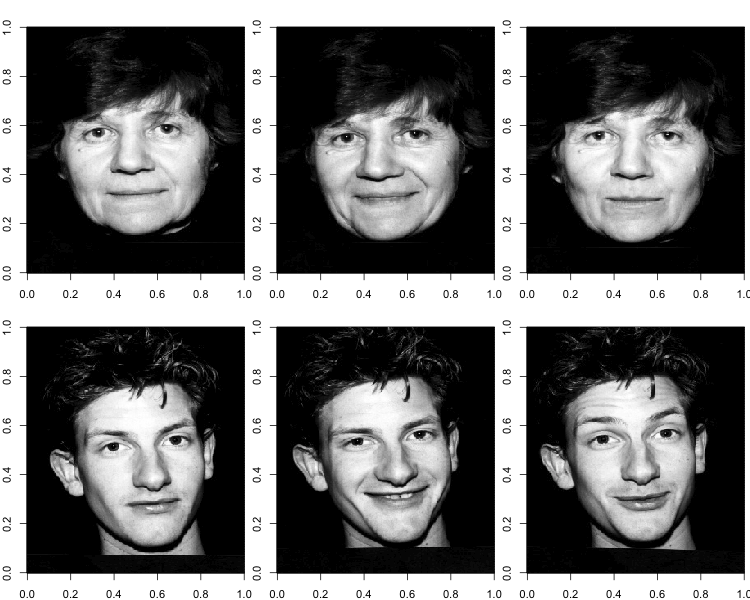
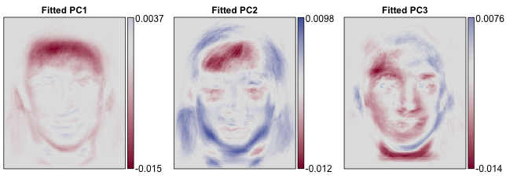
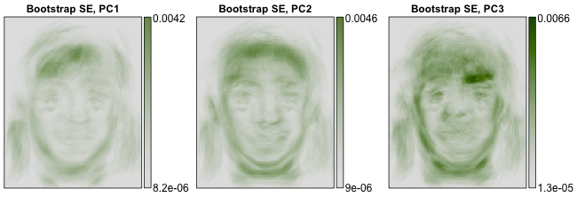

4 minutes to run code: a live demo inside a JSM speed talk
2014-08-08 Update: Added results from the presentation, and a link to run the demo on your own computer. Also added a brief summary of the intuition for the method.
On Monday morning, at this year's JSM, I'll be presenting at the speed talks session on Epidemiology and Imaging. My plan is to attempt something a little unconventional: to live demo a new method for a computationally intensive procedure (bootstrap PCA), within a presentation that's limited to just 4 minutes.
Will the code finish in time?
Or will I epic fail in front of all my peers?Stop by to find out!!!
For context, the idea of these speed sessions is to quickly show the work of a couple dozen people. Audience members get a sense of who they might like to talk to more, and can ask questions in a poster session that immediately follows the speed talks.
I'll be demoing the application of a fast, exact procedure for bootstrapping principal component analysis (PCA) in high dimensional samples. This is one way to estimate sampling variability for principal components (PCs), although it's traditionally very computationally intensive (until now!).
I'll be applying the procedure to a public dataset of 103 face images. Each image contains 92,036 pixels (346x266). Here are some examples of what these images look like, rendered with the image function in R.

These are the first three principal components, or "eigenfaces," for the sample.

On Monday, I'll be trying to calculate pixel-wise bootstrap standard errors for these eigenfaces based on 1000 bootstrap samples. With standard methods this would take about 16 minutes -- way too long for a speed talk.
2014-08-08 Updated results section: It worked!! Here are the resulting bootstrap standard errors. They took about 13 seconds to calculate.

The key to improving the speed of the procedure is that while the sample is high dimensional (92,036 variables per observation) we can always find a low dimensional subspace (103 variables per observation) that contains all of the sample points. This subpace also contains all bootstrap samples, as the bootstrap samples are redrawn from the original sample. If we represent bootstrap samples according to their low-dimensional coordinates, relative to this known subspace, we don't have to operate on the 92,036-dimensional data. Instead, we can just operate on it's known, 103-dimensional representation. Our method restricts as many computations as possible to this 103-dimensional subspace before projecting back to the original 92,036-dimensional space. This dramatically reduces computation time and memory requirements.
This demo was created as an R package, which I loaded and ran the day of the talk. You can run this demo on your own setup very easily, by running a few lines of code to download the package off github.
(end of 2014-08-08 update)
Session details:
Note: I'm applying this method to the subset of the "stirling" dataset that consists of people facing the camera directly. I'm not including the profile images in this dataset.